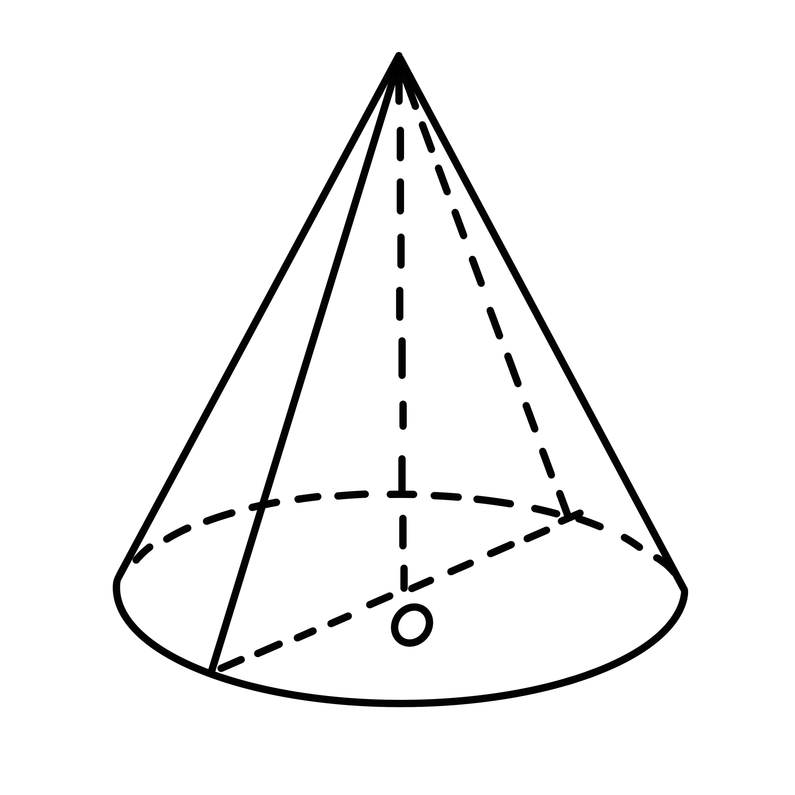
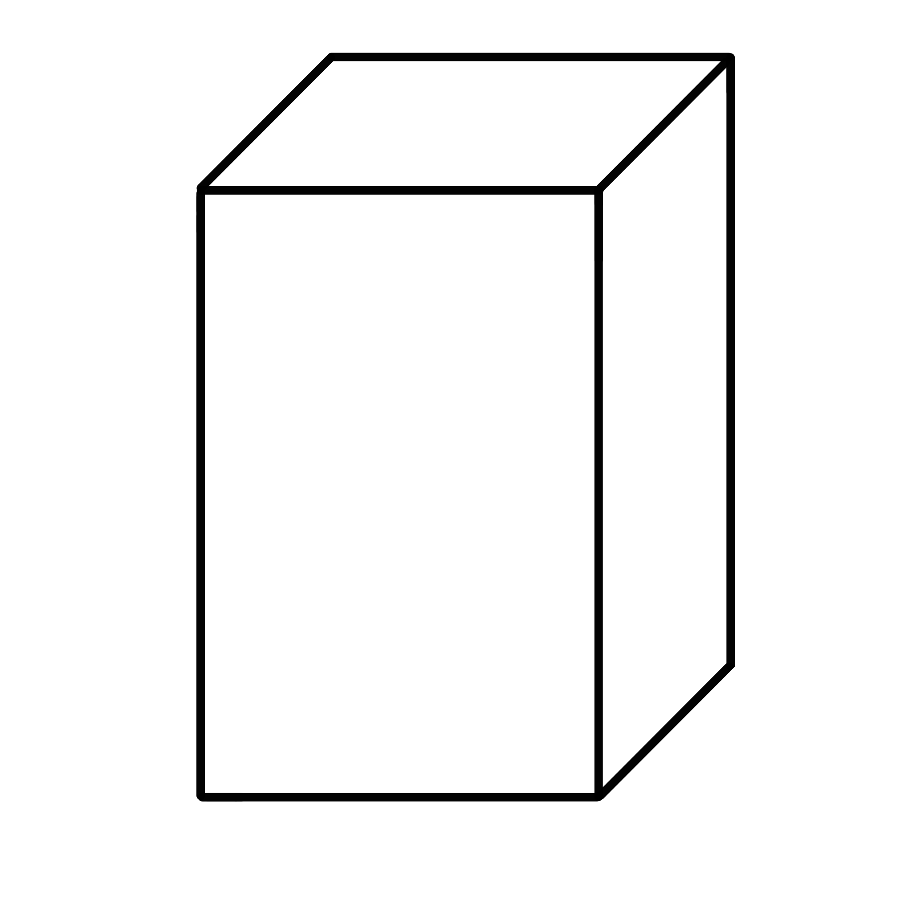
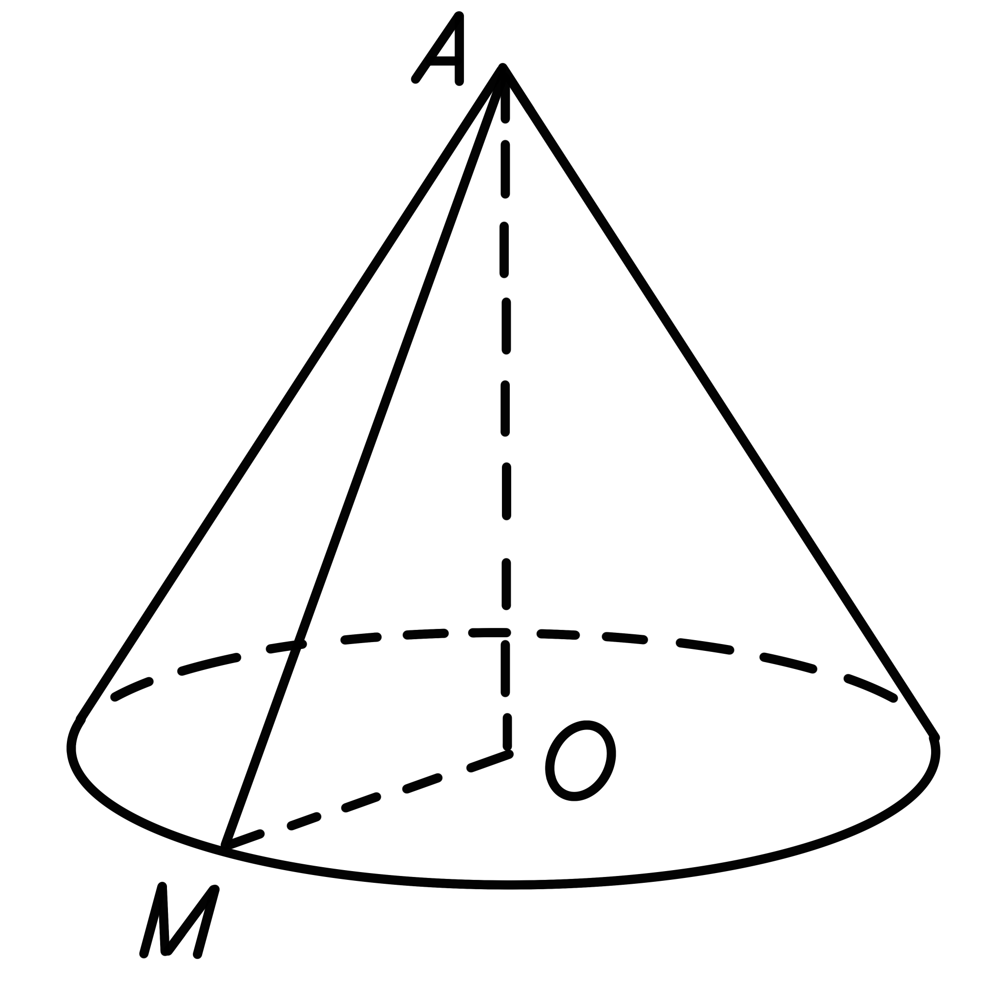
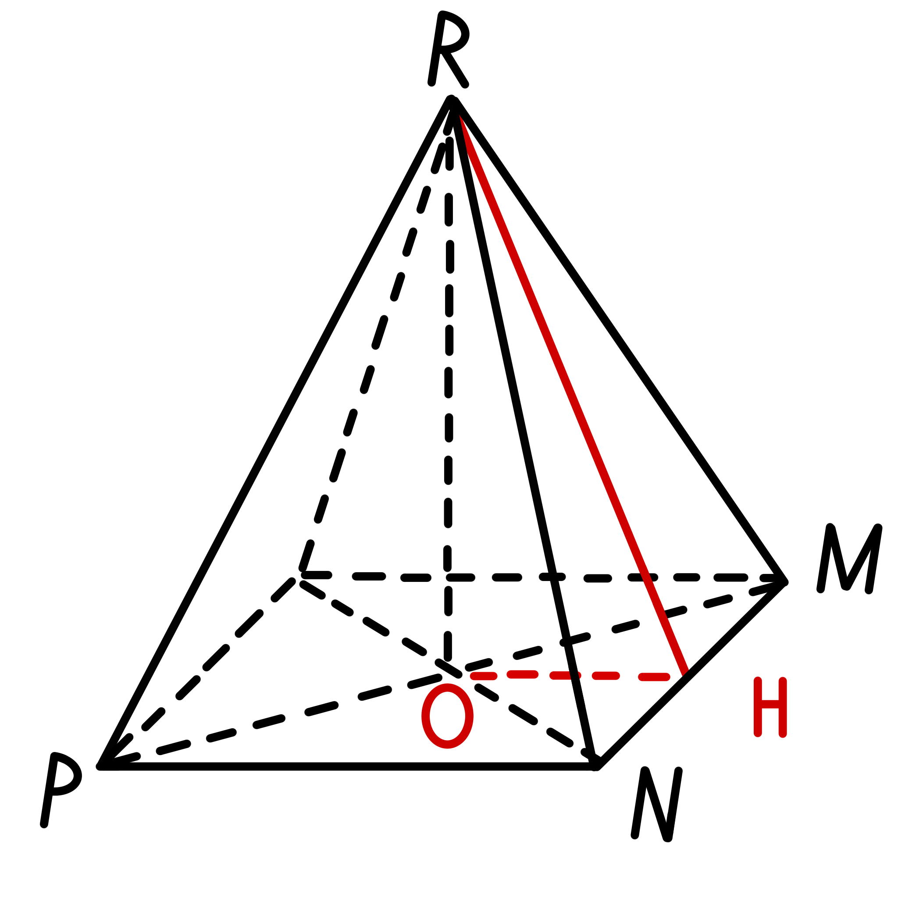
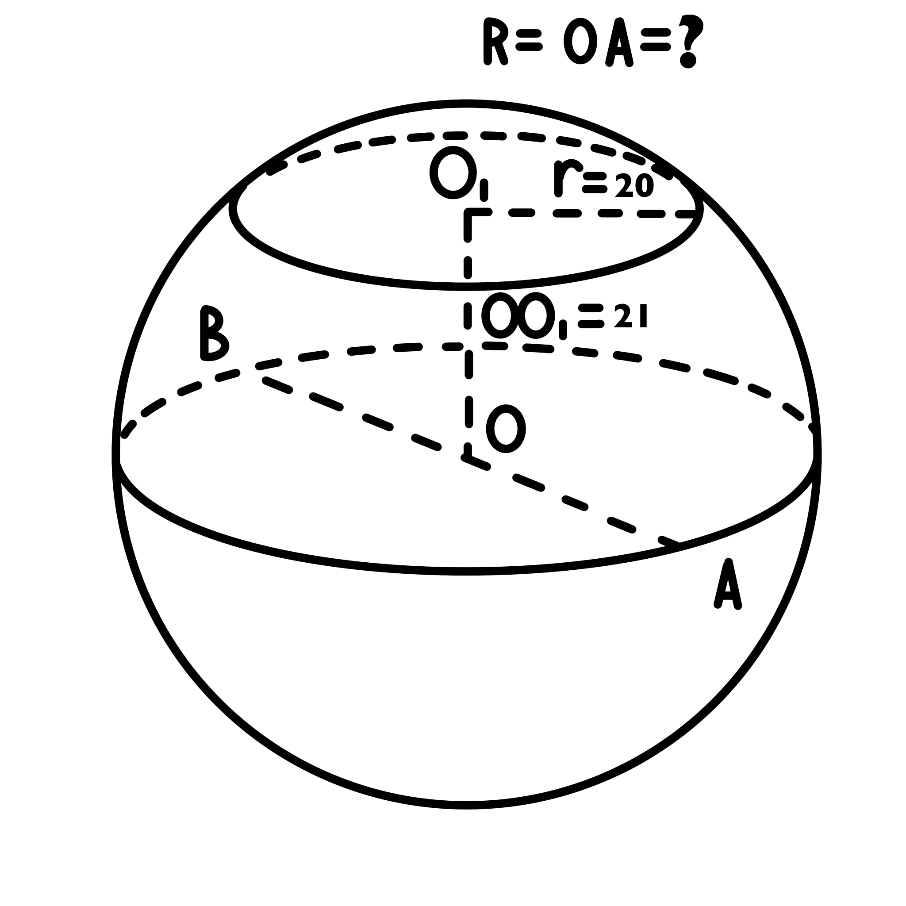
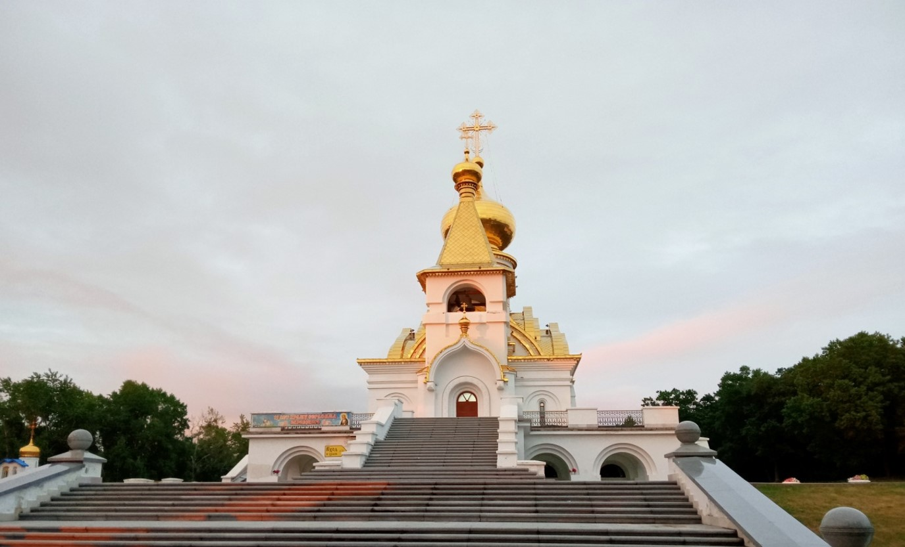
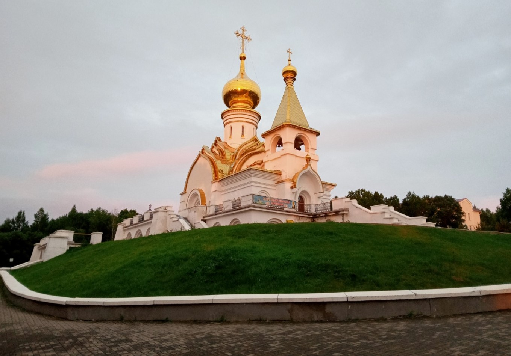

№
Задание
Ответ
Результат
11.1

Высота конуса равна 2√2. Сечение конуса плоскостью, проходящей через его высоту, является равнобедренный треугольник, боковая сторона которого равна 3. Найдите радиус основания конуса.
11.2

Дана правильная четырехугольная призма ABCDA1B1C1D1, сторона основания которой равна 3 дм, высота — 4 дм. Найдите третью часть от площади полной поверхности.
11.3

Вычислите образующую конуса, если радиус основания = 8 м, высота конуса 15 м.
11.4

Найдите высоту правильной четырехугольной пирамиды, если апофема равна 17, сторона основания 16.
11.5

Радиус сечения шара = 20 м. Расстояние от цента сечения до центра шара=21 м. Найдите радиус шара.


- Август 1993 года: первый крестный ход от Храма Александра Невского до «Серафимовой горки».
- Февраль 2003 года: молебен на начало строительства храма.
- Май 2008 года: освящение и монтаж 10 колоколов на звоннице, благодаря чему храм обрел свой голос.